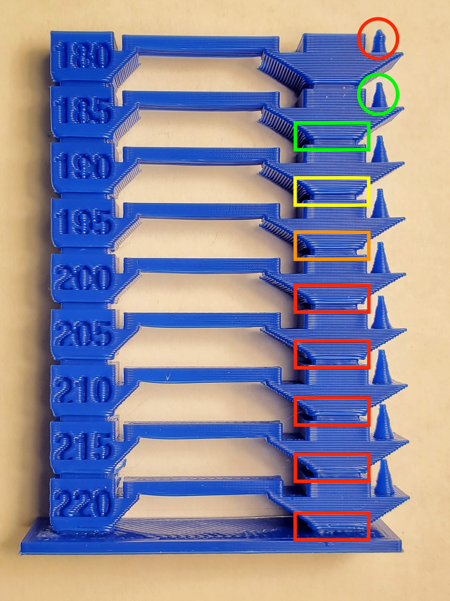

First off, all of this work is strongly based on [Customizable Temperature Tower Version
2](https://www.thingiverse.com/thing:2615842) by [quirxi](https://www.thingiverse.com/quirxi). All I really
did was follow the directions ;)
I really like the v2 tower design because it covers so many aspects in a single print.
Step 1 Adjusted Tower Layers
Loaded tempTower-220-180.scad into OpenSCAD and adjusted the temperature block
configuration for nine
blocks ranging between 180° to 220° as I find the common print ranges of PLA to be 185° to 210°.
Exported as tempTower-220-180.stl
Step 2 Embedded Layer Numbers
Loaded tempTower-220-180.stl into Slic3r, set the layer height to 0.2mm and
set `;LAYER:[layer_num]` under "Printer Settings" -> "Custom G-code" -> "Before layer change G-code":
Saved the gcode as tempTower-220-180-raw.gcode.
Step 3 Set Initial Temps and Added a Brim
Loaded a href="tempTower-220-180-raw.gcode">tempTower-220-180-raw.gcode into Cura in order to add proper brim
adhesion and sliced to tempTower-220-180.gcode. I was unable to get Slic3r to play nice with the brim and it was
always printing disconnected from the model. Found [Brim distance #2230](https://github.com/slic3r/Slic3r/issues/2230)
but, didn't like the solutions (or the argument for the behavior).
Step 4 Embedded the Temperature Changes
files$ ./setLayerTemperatur.py -s 220 -e 180 -t 5 -f tempTower-220-180-raw.gcode
startTemp: 220
endTemp: 180
tempStep: 5
gcodeFile: "tempTower-220-180-raw.gcode"
outFile: "OUT_tempTower-220-180-raw.gcode"
step: -5
-> M104 S220
-> M104 S215
-> M104 S210
-> M104 S205
-> M104 S200
-> M104 S195
-> M104 S190
-> M104 S185
-> M104 S180
Renamed OUT_tempTower-220-180-raw.gcode to tempTower-220-180.gcode
|  |
Following up from the bottom I can see that there is particular layer that is yucky but, getting better as
the temperature is decreasing. At 185° the issue looks resolved and the cone looks better than the next/one
above. Therefore 185° is the sweet spot!
|